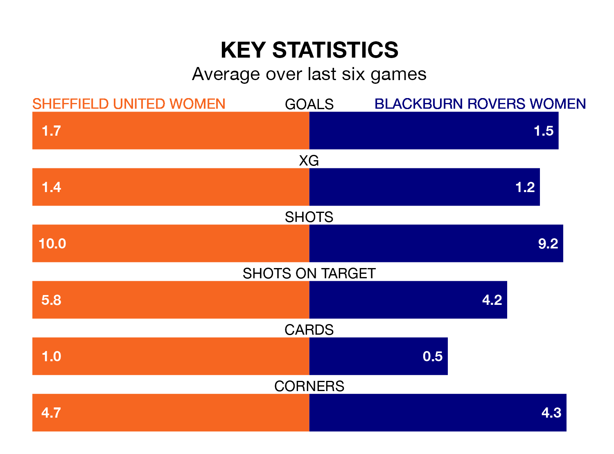

Blackburn Rovers Women face Sheffield United Women on Sunday seeking to protect their long unbeaten run in the FA Women's Championship.
Blackburn Rovers are unbeaten in seven, with four wins and three draws, ahead of the 2pm kick-off.
They face a Sheffield United team who have won four and lost three over the same number of games.
With 22 goals in 21 games so far this season, Blackburn Rovers are scoring at below the league average rate with 1.0 goals per game. But they are conceding fewer than average too, letting in 27 goals at a rate of 1.3 per game.
Sheffield United, meanwhile, are above average scorers, with 1.5 goals per game, compared to a league average of 1.4. They have conceded 1.3 goals per game.
In Isobel Goodwin, the Blades have one of the league's most on-form strikers so far this season. She has notched 15 goals in 19 appearances, to sit second in the scoring charts.
Her goal rate of one every 106 minutes is quicker than that of Megan Hornby, the visitors' top scorer with a goal every 211 minutes, and a total of seven goals in 18 games.
In the last 10 years, Sheffield United and Blackburn Rovers have played each other on 12 occasions. They won five each, and they drew twice.
On average, the Blades scored 1.9 goals and Blackburn Rovers 1.5 in those matches.
Their last meeting was on January 24, when Blackburn Rovers won 3-0 at home.
The home side are seventh in the table after 21 games, of which they have won nine and drawn two, earning 29 points.
Blackburn Rovers are one place ahead of Sheffield United in sixth, with 10 wins and three draws putting them on 33 points.
Sheffield United's last match was on April 21, a 1-0 loss against Birmingham City Women.
Blackburn Rovers beat Watford Women 1-0 last time out, on April 20, with Hornby on the scoresheet.
Updated: 07:59 (UTC), 26/04/24